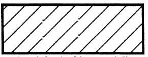
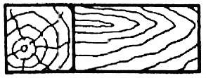
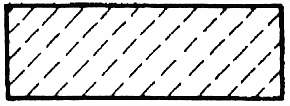
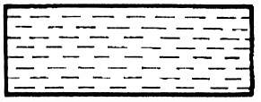
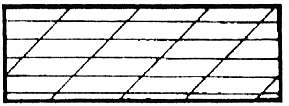

|
Šrafiranje: Risanje v 2D tehniki zahteva šrafiranje prerezanih površin. Pred šrafiranjem prereza moramo najprej doloèiti površino oziroma njene mejne obrise. Izbrati moramo tudi vzorec šrafure. Podati moramo kot, pod katerim ležijo šrafurne èrte, razdaljo med šrafurnimi èrtami in vrsto šrafurnih èrt.      Slika 1 Šrafiranje razliènih materialov: Standard SIST DIN 201 predpisuje oznaèevanje prerezanih ploskev. Doloèa tudi vrsto šrafure in barve za posamezne materiale. Vse kovinske materiale šrafiramo z enojno èrto vrste B pod kotom 45 stopinj. Med kovinske materiale uvršèamo sivo litino, jekleno litino, jeklo, baker, aluminij, bron. Ostale trde materiale šrafiramo z dvojno èrto vrste B pod kotom 45 stopinj. Tekoèine šrafiramo z vodoravno èrto vrste F. Med tekoèine štejemo vodo, olje, gorivo. Pline šrafiramo tako, da narišemo drobne krožce. Med pline štejemo metan, propan, butan, ksenon, argon, kripton, helij, vodik, dušik, kisik.
1. Vprašanja za usmerjanje pozornosti in usvajanje novih besed: 1. Kaj moramo najprej doloèiti pred šrafiranjem prereza? 2. Naštej tri lastnosti šrafurnih èrt oziroma vzorcev šrafur, ki jih lahko najdeš v besedilu? 3. Kako šrafiramo vse kovinske materiale? 4. Naštej nekaj kovinskih materialov? 5. Kako šrafiramo ostale trde materiale? 6. Kako šrafiramo tekoèine? 7. Kako šrafiramo pline? 8. Opiši èrto vrste B. Pomagaj si z ustrezno uèno enoto. 9. Opiši èrto vrste F. Pomagaj si z ustrezno uèno enoto. 10. Katera slika kaže šrafiranje trdih materialov? 11. Katera slika kaže šrafiranje tekoèin? 12. Katera slika kaže razliène vrste šrafur? 13. Katera slika kaže šrafiranje plinov? 14. Katera slika kaže šrafiranje kovinskih materialov? 2. Zapiši od ene do pet kljuènih besed, ki povzemajo vsebino te uène enote. 3. Vprašanja za razmislek, ponavljanje in povezovanje z lastno izkušnjo: 4. Domaèa naloga: V enem do petih stavkih zapiši, kaj ti je v tej uèni enoti najbolj ostalo v spominu. |